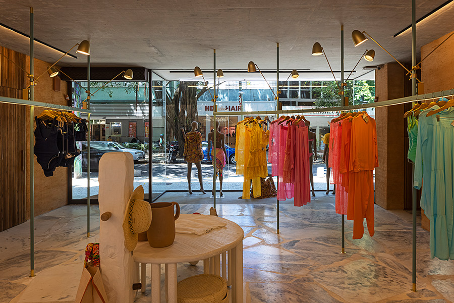
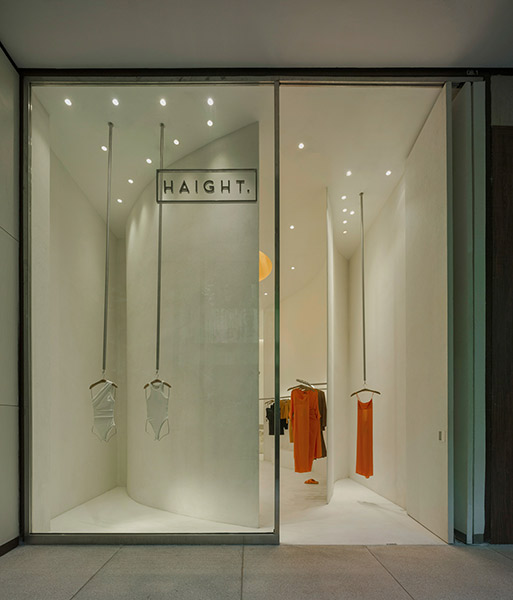
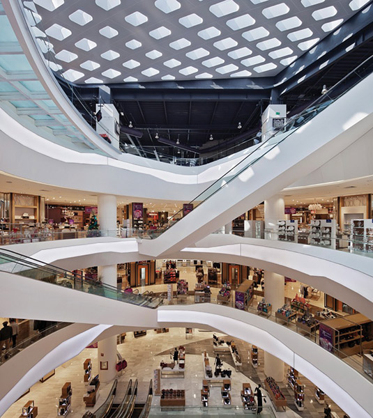
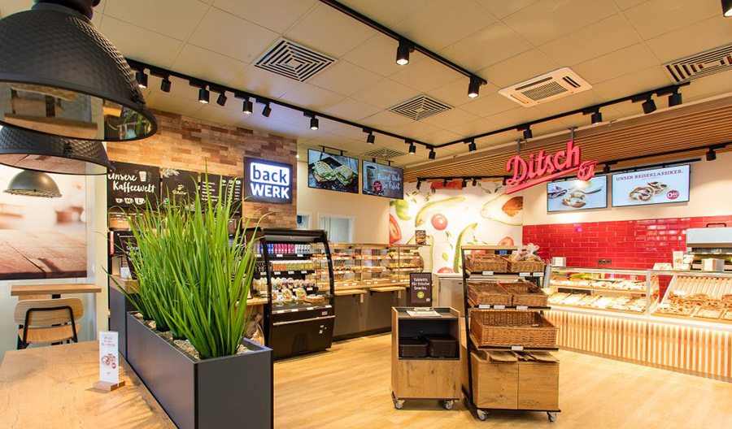
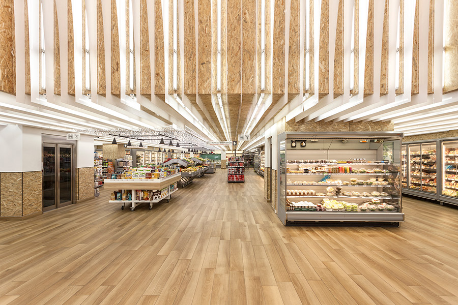
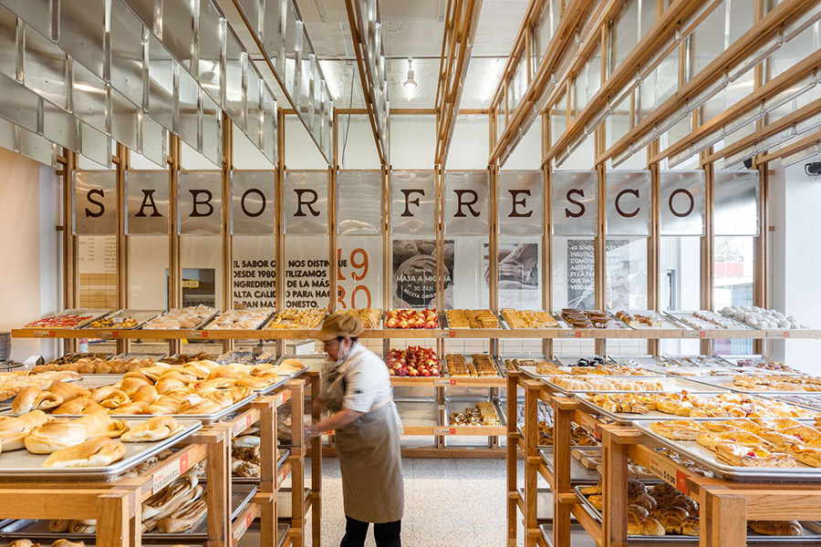
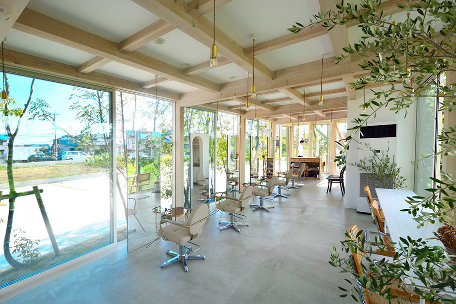

Segundo Zamberlan (2010, p. 19), os empresários visualizam o ponto de venda como um grande teatro. As paredes e os pisos são o palco; a iluminação, os móveis e a sinalização visual são os equipamentos; e os produtos constituem o espetáculo em si. Assim como no teatro, o design da loja e todos os seus componentes devem estar em harmonia para apoiar o produto exposto, e não competir com ele.

Loja Cia Marítima – Ipanema
Fonte: Finotti apud ArchDaily (2022)
Loja de moda praia com piso em pedra natural de formato irregular, em branco e azul, lembrando o mar. Há uma arara grande, em metal azul-turquesa, formato curvo, instalada com fixação no piso e no forro, com algumas peças coloridas de moda praia. Na arara, há algumas luminárias em metal dourado, de ponto focal, direcionadas para as peças de roupa. No centro da loja, uma peça representa um pilar baixo, com alguns ganchos em madeira, com chapéus e bolsas penduradas. Ao lado do pilar, existem três mesas com níveis e tamanhos diferentes, com formato orgânico, contendo um dos vasos de barro e uma bermuda exposta em cima da mesa mais alta.
Os pontos de venda são mais do que apenas espaços comerciais: são cenários dinâmicos onde marcas e consumidores se encontram, interagem e, por fim, compartilham experiências memoráveis. A importância de um ponto de venda ultrapassa a simples transação comercial, abrangendo aspectos como atmosfera, experiência do cliente e identidade de marca.
O design de interiores nos pontos de venda não é apenas uma questão de estética, mas sim uma ferramenta estratégica que influencia diretamente o comportamento do consumidor. A disposição dos elementos, a escolha das cores, a iluminação e a organização do espaço são fatores que impactam a jornada de compra, a percepção da marca e a fidelização do cliente.
Ao longo deste conteúdo, serão explorados os diferentes tipos, localizações, áreas e setores específicos que compõem os ambientes do PDV, para que se compreenda como o design pode destacá-lo, fazendo com que atraia consumidores e construa conexões duradouras.
Os pontos de venda são as interfaces tangíveis entre produtos ou serviços e consumidores, desempenhando um papel fundamental no cenário comercial. A diversidade de tipos de pontos de venda reflete a complexidade do mercado e das necessidades dos consumidores. Serão explorados alguns desses tipos, destacando suas características distintivas.
Um ponto de venda de varejo é um local físico ou virtual onde produtos ou serviços são disponibilizados para venda direta aos consumidores finais. Há diversos segmentos desse tipo. Veja alguns deles a seguir.
Pequenas lojas especializadas que oferecem produtos exclusivos e atendimento personalizado.

Vitrine da loja de roupas Haight
Fonte: Cairoli apud ArchDaily (2023)
Vitrine da loja de roupas Haight. Há um grande vidro com contorno em estrutura metálica preta. O interior da loja trabalhado é branco, com uma parede curva ocultando parcialmente a loja, mostrando apenas algumas roupas vermelhas, que pendem do teto em cabides, parecendo flutuar.
Estabelecimentos amplos que abrangem uma variedade de categorias de produtos, proporcionando uma experiência de compra abrangente.

Loja de departamento Liverpool
Fonte: Alves (2012)
Interior da loja Liverpool, com três andares dispostos em formato circular, com um átrio ao centro, coberto por uma cobertura vazada. Todos os andares são em tons de branco, conectados por escadas rolantes, com expositores com produtos.
Espaços projetados para atender às necessidades imediatas dos clientes, geralmente localizadas em áreas de tráfego intenso.

Loja de Conveniência Ditsch
Fonte: Brasil Postos (2020)
Interior da loja de conveniência Ditsch, trabalhado em tons de madeira. Ao fundo, há uma parede em vermelho contendo o nome da loja e, à frente dessas paredes, expositores alimentícios aquecidos. À esquerda da loja, existem vasos em tom de grafite, com plantas, ao centro, há gôndolas em madeira no formato de caixa com itens do dia a dia. A iluminação toda é feita com trilhos com spots na cor preta.
Estabelecimentos que oferecem uma variedade de produtos alimentícios e itens de necessidade diária.

Supermercado Thanopoulos em Atenas
Fonte: Bisti apud ArchDaily (2018)
Interior do supermercado Thanopoulos, com piso em madeira e teto trabalhado com chapas de OSB, intercaladas com chapas de acrílico branco, lineares, que conduzem ao fundo da loja. As gôndolas com produtos encontram-se nas laterais, alinhadas com os perfis do teto.
Versões ampliadas dos supermercados, que incluem departamentos de eletrônicos, roupas e outros itens não alimentares.
Lojas especializadas na venda de alimentos, geralmente voltadas a um grupo alimentício, como padarias, cafeterias, açougues, hortifrúti, entre outros.

Padaria Mi Pan/Concéntrico
Fonte: Apertura Arquitectónica apud ArchDaily (2022)
Interior de uma padaria, contendo a escrita ao fundo “Sabor Fresco”, com teto e parede de fundo decorados com ripas de madeiras intercaladas com as letras da escrita ao fundo. À frente, há uma grande gôndola horizontal em madeira e duas gôndolas em ilha, contendo diferentes produtos de uma padaria.
Estabelecimentos que oferecem produtos de marcas renomadas ou não, com descontos significativos.
Pontos de venda que operam sob uma marca já estabelecida, seguindo um modelo padronizado.
Estabelecimentos que oferecem serviços em conjunto com a venda de produtos, como salões de beleza, academias ou lojas de reparos diversos.

Salão de beleza em Kakamigahara
Fonte: ArchDaily (2023)
Interior de um salão de beleza, onde a lateral esquerda é toda em vidro, com as estações para cuidados com cabelos, contendo uma poltrona, um espelho e uma mesinha auxiliar, todas de frente para o vidro. O teto é branco, trabalhado com ripas em madeira aparente, e o piso em cimento queimado de cinza claro.
Uma loja de atacado é um estabelecimento comercial que opera com o modelo de venda em grandes quantidades para revendedores, empresas ou clientes que buscam adquirir produtos em volume. Em contraste com as lojas de varejo, as lojas de atacado são direcionadas para compradores em grande escala, visando atender às necessidades de revenda ou de consumidores que buscam economizar comprando em grandes quantidades. Existem lojas de atacado para diversas áreas, como bens de consumo, alimentos, eletrônicos, automotivo, vestuário, entre outros. Para esse tipo de PDV, o designer deverá adotar uma estratégia mais direcionada à organização dos setores e ao armazenamento em larga escala de todos os produtos.
O projeto de interiores desempenha um papel vital na criação de pontos de venda envolventes e eficientes, em que a estética se entrelaça com a funcionalidade para proporcionar experiências memoráveis aos clientes. Explorar as diferentes características do design de interiores nos pontos de venda evidencia a importância de uma abordagem cuidadosa e estratégica para maximizar o impacto visual e otimizar o fluxo de consumidores. Veja quais são as características que devem ser observadas no planejamento do design de interiores de um PDV.
1. Identidade visual e branding
Paleta de cores: a escolha das cores deve refletir a identidade da marca, criando uma atmosfera coesa e reconhecível em todo o ambiente.
Elementos gráficos: logotipos, imagens e gráficos que comunicam a mensagem da marca devem ser integrados harmoniosamente no espaço.
2. Layout e organização do espaço
Zona de atratividade: áreas estrategicamente posicionadas para atrair a atenção dos clientes, muitas vezes, destacando algum produto específico.
Circulação eficiente: o layout deve orientar o fluxo de clientes de maneira intuitiva e livre, facilitando a movimentação e a exploração do espaço.
3. Iluminação
Destaque de produtos: a iluminação direcional pode ser usada para enfatizar produtos específicos, criando pontos focais de interesse.
Ambiente geral: a iluminação ambiente contribui para a atmosfera geral da loja, influenciando o humor e o comportamento de clientes e funcionários.
4. Mobiliário e expositores
Versatilidade: mobiliário modular e expositores ajustáveis permitem uma adaptação fácil para diferentes promoções ou mudanças de layout.
Estilo coerente: o mobiliário deve estar alinhado com a estética da marca, proporcionando uma experiência visualmente consistente.
5. Setorização e tematização
Setores temáticos: criar áreas distintas com temas específicos pode cativar diferentes segmentos de clientes e melhorar a experiência de compra.
Sinalização adequada: a sinalização interna e visível auxilia na orientação dos clientes, destacando áreas específicas e promoções sazonais.
6. Tecnologia integrada
Experiências interativas: a incorporação de tecnologia, como telas interativas ou realidade aumentada, pode proporcionar experiências inovadoras aos clientes.
Sistemas de pagamento eficientes: PDVs modernos integram sistemas de pagamento rápidos e seguros, contribuindo para uma experiência de compra fluida.
7. Elementos sensoriais
Aromas e sons: integração de aromas e trilhas sonoras que complementam a atmosfera desejada, reforçando a identidade e criando uma experiência sensorial única, gerando conexão e memória afetiva com a loja.
A localização de um ponto de venda desempenha um papel crucial no seu sucesso comercial, influenciando o alcance, a visibilidade e a acessibilidade para os consumidores. À medida que o cenário do comércio evolui, as estratégias de localização se tornam cada vez mais variadas e adaptativas. Dessa forma, serão exploradas as diferentes localizações onde se encontram os pontos de venda, destacando suas características distintivas e algumas possíveis estratégias de design.
Dentro de um ponto de venda, cada área é meticulosamente planejada para atender a diferentes aspectos da experiência do cliente.
O design inteligente e estratégico dessas áreas não apenas influencia a estética geral, como também impacta diretamente a eficiência operacional e a satisfação do consumidor.
A seguir, veja as diversas áreas que compõem um ponto de venda, destacando suas funções distintas e o papel crucial que desempenham na criação de uma experiência envolvente.
Em um PDV, a experiência do cliente é moldada pela cuidadosa coreografia dos elementos de design de interiores em setores essenciais que desempenham funções distintas. A seguir, serão brevemente explorados cinco desses setores fundamentais do ponto de vista do design de interiores: estoque e armazenamento, exposição, caixa, logística e atendimento ao cliente.
O setor de estoque e armazenamento, concebido sob a perspectiva do design, busca uma disposição eficiente e esteticamente agradável do espaço. Sistemas de prateleiras acessíveis, soluções de armazenamento visualmente integradas e iluminação estratégica contribuem para uma atmosfera organizada e funcional.
Na área de exposição, o design visa criar composições visuais impactantes. O leiaute da exposição deve ser meticulosamente planejado para direcionar o olhar do cliente, enquanto elementos como iluminação direcionada, displays personalizados e materiais atrativos adicionam camadas visuais à experiência de compra.
O setor de caixa, considerado do ponto de vista do design, deve integrar harmoniosamente elementos como balcões elegantes, sistemas de pagamento intuitivos e displays próximos aos caixas, que convidam à última oportunidade de compra. A disposição espacial é cuidadosamente planejada para otimizar a experiência de pagamento.
No âmbito da logística, o design se concentra em eficiência. Leiautes logísticos são concebidos para facilitar os fluxos de movimentação de mercadorias, e as áreas de estoque são projetadas para serem não só funcionais, mas coerentes com a estética da identidade da marca.
O setor de atendimento ao cliente, sob a ótica do design de interiores, busca incorporar espaços acolhedores. Áreas de assistência são projetadas para oferecer conforto e privacidade quando necessário, enquanto a disposição do mobiliário e a escolha de materiais refletem a imagem de uma marca atenciosa.
O projeto do ponto de vendas apresenta muitas demandas ao designer de interiores. É um trabalho desafiador, pois você não fará projetos para uma pessoa, e sim para um grupo de pessoas, os clientes do seu cliente.
Dessa forma, compreender os espaços existentes, suas características, onde podem estar localizados e quais são suas áreas e setores é somente o início de sua caminhada nesse conhecimento. Até a próxima!